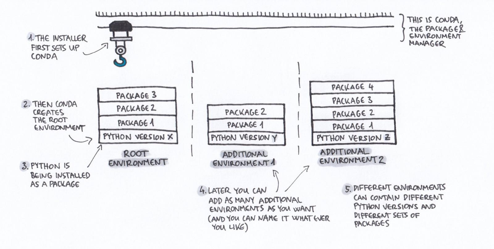

4 Python
4.1 Introduction
Python is primary used for web testing, pipelining, data management, data science, and visualization.
Installation
- Download Python 3.7.0 from Anaconda
- Open Bash and check that Python is saved to the AppData folder
where pythonshould return something likeC:\Users\jh111\AppData\Local\Continuum\anaconda3\python.exewhere pipshould return something likeC:\Users\jh111\AppData\Local\Continuum\anaconda3\Scripts\pip.exe
- If either of these throw an error, like “could not find files…”, python and pip need to be added to the PATH environment variable
Anaconda Background
We use the Anaconda distribution of python. There are several advantages to using Anaconda over base python, including:
- An Anaconda installation comes with pre-built binaries for many popular packages, including several that we use frequently (numpy, pandas). Installing some of these (e.g. numpy) without Anaconda is very tricky and requires administrator permissions.
- Anaconda comes with very nice environment management tools, which not only allow you to manage your package dependencies per-project, but also your python version.
4.2 Reproducibility
Config files
YAML
Below is example code of how to read in and write out yaml files. The same functions, documented and tested, can be found in the utilsPy package.
Example file
## You can add comments to YAML!
VAR1: 1
VAR2: 2Install
conda install pyyamlImport
import yaml
with open("config.yaml", "r", encoding="utf-8") as cf:
config = yaml.load(cf)Update
import yaml
config["var3"] = "VAR3"
with open('config.yaml', 'w') as fp:
yaml.dump(config, fp)JSON
Below is example code of how to read in and write out json files. The same functions, documented and tested, can be found in the utilsPy package.
Example file
{
"VAR1" = 1,
"VAR2" = 2
}Install
conda install jsonImport
import json
with open('config.json') as cf:
config = json.load(cf)CSV
Example file
|VAR1 | VAR2|
|-----|-----|
| 1 | 2 |Install
conda install pandasImport
import pandas as pd
config = pd.read_csv("path_to_csv")Environments
Package and environment managers
Most popular python tools for virtual environments:
- PIP: Python package manager; funnily enough, it stands for “Pip Installs Packages”“)
- Conda: Package and environment manager

Conda Environment
A conda environment is container that holds a specific version of the source software and packages.
Setting Up a Conda Environment
- Open Git Bash
- Create a new environment by typing
conda create --name NAME_OF_ENVIRONMENT. Addingpython=3.7orpython=2.7specificies which python to install. If No version is specified, the root version will be used. 3. Install the packages into the environment. Typeconda install numpy. Package versions can be specified by addingnumpy==1.11ornumpy>=1.11 - Save the environment so others can replicate it. Type
conda list -e > requirements.txt. Version control the requirements file. Now others be able to build your exact environment, helping to mitigate python and package version issues
Use an already created conda environment
- To see what environments exist type
conda env list. The asterisk (*) indicates the current active environment - Activate the environment of interest.
source activate NAME_OF_ENVIRONMENT. Activating the environment allows access to the version of python and all the packages installed in that environment
Copy an environment
- Using the requirements.text file type
conda create --name NAME_OF_ENVIRONMENT --file requirements.txt - Activate the environment by typing
source activate NAME_OF_ENVIRONMENT
Deleting an environment
conda remove --name NAME_OF_ENVIRONMENT --all
Data Archiving
Please use the dataArchivePy library. The dataArchivePy library is a library to help analysts link data and content.
Workflow
Develop code normally. Add and commit code to bitbucket/TFS and do pull requests. When it comes time to deliver content to a client/partner then use the dataArchivePy library. At this point the code should be code reviewed and tested and be ready to merge into master.
- Pull request development branch to master
- Checkout the master branch
- Use the Sample code and auto_commit modules and archive_files modules to commit and archive data and other content.
4.3 Quality
Testing
Rules of thumb
- Unit tests should have descriptive function names (often long!)
Directory structure
Set-up the directory this way.
For each python module there should be an equivalent test_XXX.py or XXX_test.py module, to test the functions in the python module.
dir\
spam.py
__init__.py
tests\
test_spam.py
__init__.pyTesting Libraries
There are many different testing libraries in Python. This website here lists 40+. One of the easiest and most popular libraries to use for testing beginners is the unittest library.
Unittest
Python Module
Example from Jeff Knupp:
Script called primes.py.
def is_prime(number):
"""Return True if *number* is prime."""
for element in range(number):
if number % element == 0:
return False
return True
def print_next_prime(number):
"""Print the closest prime number larger than *number*."""
index = number
while True:
index += 1
if is_prime(index):
print(index)Python Test Module
Import the module to test as the beginning of the script. If the functions to test are contained in an object then make an instance of the object and call the functions using dot notation.
Script called test_primes.py.
import unittest
from primes import is_prime
class PrimesTestCase(unittest.TestCase):
"""Tests for `primes.py`."""
def test_is_five_prime(self):
"""Is five successfully determined to be prime?"""
self.assertTrue(is_prime(5))
if __name__ == '__main__':
unittest.main()Running the tests
Navigate to the python module directory and run the following
Run all the tests for all modules
conda install pytest
python -m pytest testsRun all tests for one module
conda install pytest
python -m pytest tests/test_spam.pyTesting column types
Test if column is an integer
self.assertIsInstance(df.col, int)Test if column is a string
self.assertIsInstance(df.col, str)4.4 Data Management
Import
SAS
import pandas as pd
df = pd.read_sas(file, format = "sas7bdat", encoding = "iso-8859-1")Pandas 0.23.4+ works better
Excel
import pandas as pd
xl = pd.ExcelFile(file)
df = xl.parse('SHEET_NAME')CSV
import pandas as pd
df = pd.read_csv(file, encoding="ISO-8859-1")Export
CSV
import pandas as pd
df.to_csv("path/name_of_file.csv")Excel
import pandas as pd
df.to_excel("df.xlsx", sheet_name = "Sheet 1")Reshaping
Wide to Long
import pandas as pd
df_long = pd.melt(df, id_vars = 'state', value_vars = cols)Long to Wide
import pandas as pd
df_wide = df.pivot(index, columns, values)- Index is the column of columns to keep in long format
- Columns are the columns that will go from long to wide
- Values are the values which will populate the columns
Converting column types
Integer to string
df["col_str"] = df["col_int"].apply(str)String to numeric
import pandas as pd
df["col_num"] = pd.to_numeric(df["col_str"])String to datetime
df["datetime"] = pd.to_datetime(df["datetime"], format="%m/%d/%Y %I:%M%p")
df["date"] = df["datetime"].dt.dateOther common data management functions
Rename columns
import pandas as pd
df.rename(columns = {"old_name": "new_name"}, inplace = True)
# OR
df = df.rename(columns = {"old_name": "new_name"})
Drop duplicates
import pandas as pd
df.drop_duplicates(inplace = True)
# OR
df = df.drop_duplicates()If else
import numpy as np
df['monthly'] = np.where((df['X'] == 1) | (df['Y'] == 1), 1, 0)Resources
4.5 Web
Web testing
Install selenium with conda
1. Open Anaconda Prompt
2. `conda install selenium`Additional information about the install can be found in the Python Installation docs
Launching a selenium driver
- The python distribution of selenium relies on downloadable webdrivers9. Chrome and Firefox drivers are preferred, though good web-testers will test across all platforms!
- Chrome
- Firefox
- Edge
- Internet Explorer
- Safari10
- Test to see if selenium is set-up properly
Open python and run the following
from selenium import webdriver
cpath = 'path_to_downloaded_and_unzipped_chrome_driver'
fpath = 'path_to_downloaded_and_unzipped_firefox_driver'
chrome_driver = webdriver.Chrome(executable_path = cpath)
#OR
firefox_driver = webdriver.Firefox(executable_path = fpath)A chrome driver and firefox driver should launch with the execution of these lines
Version controlling drivers
Like any software, drivers are updated and change over time, and the way in which the selenium package interacts with these drivers is subject to change over time. A good practice, especially if others will be utilizing the same code is to version control the drivers. Otherwise other users of the code will have to go download their own drivers, which could results in different driver versions and cause issues. Drivers can be added to TFS the same way any other file is added to git.
Waits
- Explicit waits are better to use than implicit waits
- http://toolsqa.com/selenium-webdriver/implicit-explicit-n-fluent-wait/
Expected Conditions Waits
- title_is
- title_contains
- presence_of_element_located
- visibility_of_element_located
- visibility_of
- presence_of_all_elements_located
- text_to_be_present_in_element
- text_to_be_present_in_element_value
- frame_to_be_available_and_switch_to_it
- invisibility_of_element_located
- element_to_be_clickable
- staleness_of
- element_to_be_selected
- element_located_to_be_selected
- element_selection_state_to_be
- element_located_selection_state_to_be
- alert_is_present
4.6 Resources
General
Style Guides
Reproducibility
Environments
Conda Environments
Quality
Testing
Resources
- Improve Your Python: Understanding Unit Testing - Jeff Knupp
- Testing Your Code - The Hitchhikers Guide to Python
- Beyond Unit Tests: Taking Your Testing to the Next Level - Hillel Wayne
- What the mock?—A cheatsheet for mocking in Python - Yeray Diaz